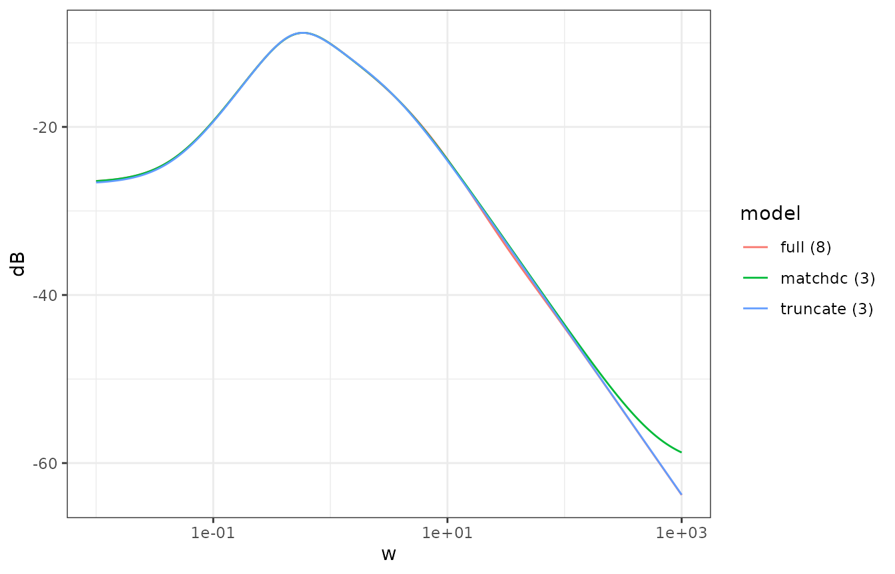

Minimal realizations
Uncontrollable or unobservable states do not affect the input-output
behavior. ctrl_minreal() removes them with orthogonal
staircase reductions:
Hankel singular values
The Hankel singular values \sigma_i = \sqrt{\lambda_i(W_c W_o)} measure how much each state of a balanced realization contributes to the input-output map. They are invariant under state transformations:
set.seed(4)
A <- -diag(c(0.5, 1, 2, 5, 10, 20, 50, 100)) +
matrix(rnorm(64, sd = 0.3), 8)
B <- matrix(rnorm(8), 8)
C <- matrix(rnorm(8), 1)
big <- ctrl_ss(A, B, C)
ctrl_is_stable(big)
#> [1] TRUE
hsv <- ctrl_hsvd(big)
signif(hsv, 3)
#> [1] 2.07e-01 1.67e-01 1.78e-02 1.23e-03 5.82e-04 1.91e-04 1.06e-05 2.87e-06
plot(hsv, log = "y", type = "b", ylab = "Hankel singular value")Balanced truncation
Truncating the balanced realization to order r keeps the stable dominant dynamics and gives the a priori error bound \|G - G_r\|_\infty \le 2 \sum_{i > r} \sigma_i .
red <- ctrl_balred(big, order = 3)
attr(red, "error_bound")
#> [1] 0.004039388
err <- ctrl_norm(big - red, "inf")
c(actual = as.numeric(err), bound = attr(red, "error_bound"))
#> actual bound
#> 0.002092256 0.004039388The actual error is below the bound, as the theory guarantees.
method = "matchdc" (singular perturbation) preserves the DC
gain instead of high-frequency accuracy:
red_dc <- ctrl_balred(big, order = 3, method = "matchdc")
c(full = ctrl_dcgain(big), truncate = ctrl_dcgain(red), matchdc = ctrl_dcgain(red_dc))
#> full truncate matchdc
#> 0.04661459 0.04566552 0.04661459Comparing responses
w <- 10^seq(-2, 3, length.out = 300)
mag <- function(s) 20 * log10(Mod(ctrl_freqresp(s, w)$response[1, 1, ]))
df <- data.frame(w = rep(w, 3), dB = c(mag(big), mag(red), mag(red_dc)),
model = rep(c("full (8)", "truncate (3)", "matchdc (3)"),
each = length(w)))
ggplot2::ggplot(df, ggplot2::aes(w, dB, color = model)) + ggplot2::geom_line() +
ggplot2::scale_x_log10() + ggplot2::theme_bw()
Unstable models
Balanced truncation is defined for stable models. For unstable models
the package separates the stable and unstable parts with
ctrl_stabsep(), reduces the stable part and keeps the
unstable part exactly:
unst <- ctrl_ss(as.matrix(Matrix::bdiag(A, matrix(0.5))),
rbind(B, 1), cbind(C, 1))
parts <- ctrl_stabsep(unst)
ctrl_poles(parts$unstable)
#> [1] 0.5+0i
red_u <- ctrl_balred(unst, order = 4)
sort(Re(ctrl_poles(red_u)), decreasing = TRUE)[1]
#> [1] 0.5